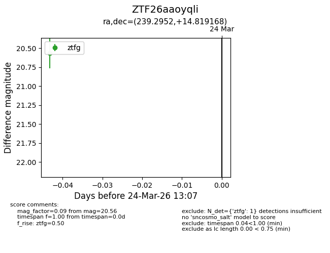
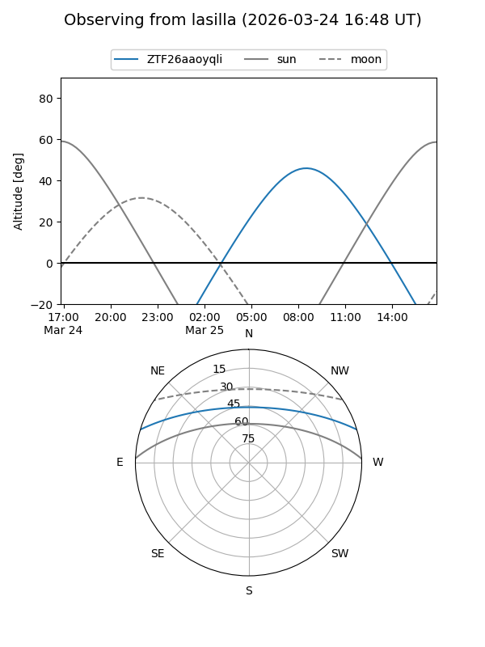
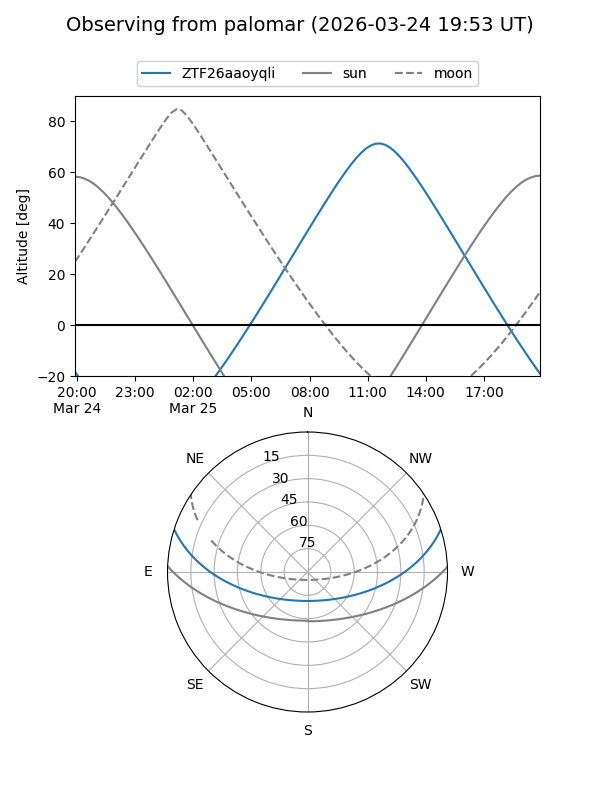

ZTF26aaoyqli
Target ZTF26aaoyqli at 2026-03-24 13:10
Aliases and brokers:
FINK: link
Lasair: link
ALeRCE: link
alt names
ZTF26aaoyqli (ztf,fink_ztf)
Coordinates:
equatorial (ra, dec) = 239.2952,+14.81917
equatorial (HMS+DMS) = 15:57:10.84,+14:49:09.00
galactic (l, b) = (26.7265,+45.20051)
Flags:
Photometry:
last ztfg=20.56
1 ztfg detections
Lightcurve

Visibility


Additional plots